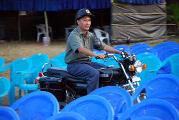
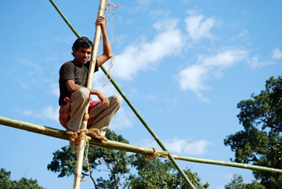
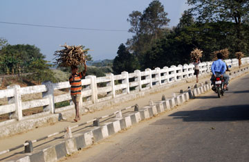
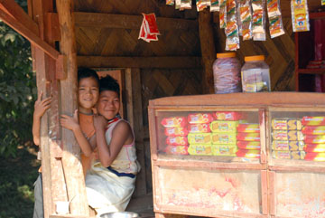
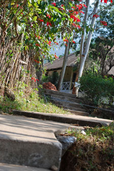
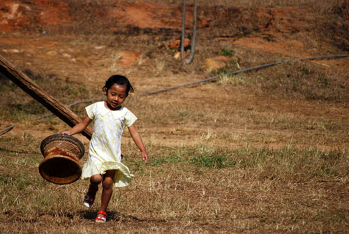

India \
Tura, North East India / Dec.07
_An isolated region wedged between Bangladesh, Bhutan, China and Myanmar with only a thin corridor connecting it to the rest of India. One of the largest towns in Meghalaya, Tura is a valley located at the foothills of the Tura Hills and right below the Tura Peak





